Engineering Portfolio
Thane Johannsen
Mechanical engineer with 2 years of structural analysis, FEA, material qualification, and hands-on
prototyping experience. UT Austin ME '24 — 3.89 GPA.
FEA · NASTRAN / PATRAN
CATIA
Python Automation
Structural Analysis
Material Qualification
MATLAB
Prototyping & Machining
Vibration Analysis
Work
Projects & Research
Applied Materials uses large semiconductor machines with robotic arms that move with high precision —
to validate those arms before deployment, they test them on external test stands. For the test results
to be accurate, the test stand must replicate the vibrational characteristics of the real machine.
Our capstone developed a process to do exactly that: extract the damping ratios and spring
constants of a physical structure from free-response accelerometer data, so those properties
can be matched when designing a compliant test stand.
We applied the methodology to a lab table and a 3-D printer carriage as test objects — instrumented
with PCB Piezotronics accelerometers, data acquired via a Zoom F8 DAQ,
and structural dynamics modeled in MATLAB. The project was a direct analog to the cancelled AMAT
collaboration: a replicable characterization workflow that generalizes to any structure.
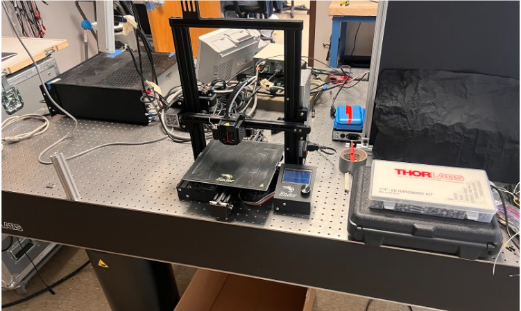
Printer on Thorlabs optical isolation table
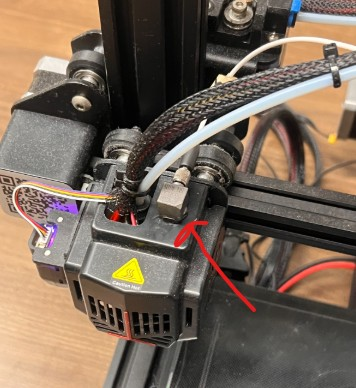
PCB Piezotronics accelerometer (red arrow) on tool head
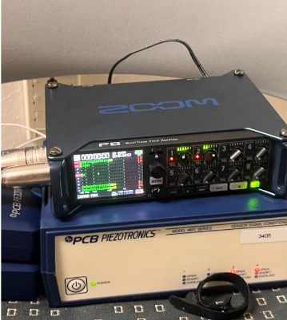
Zoom F8 + PCB Piezotronics DAQ
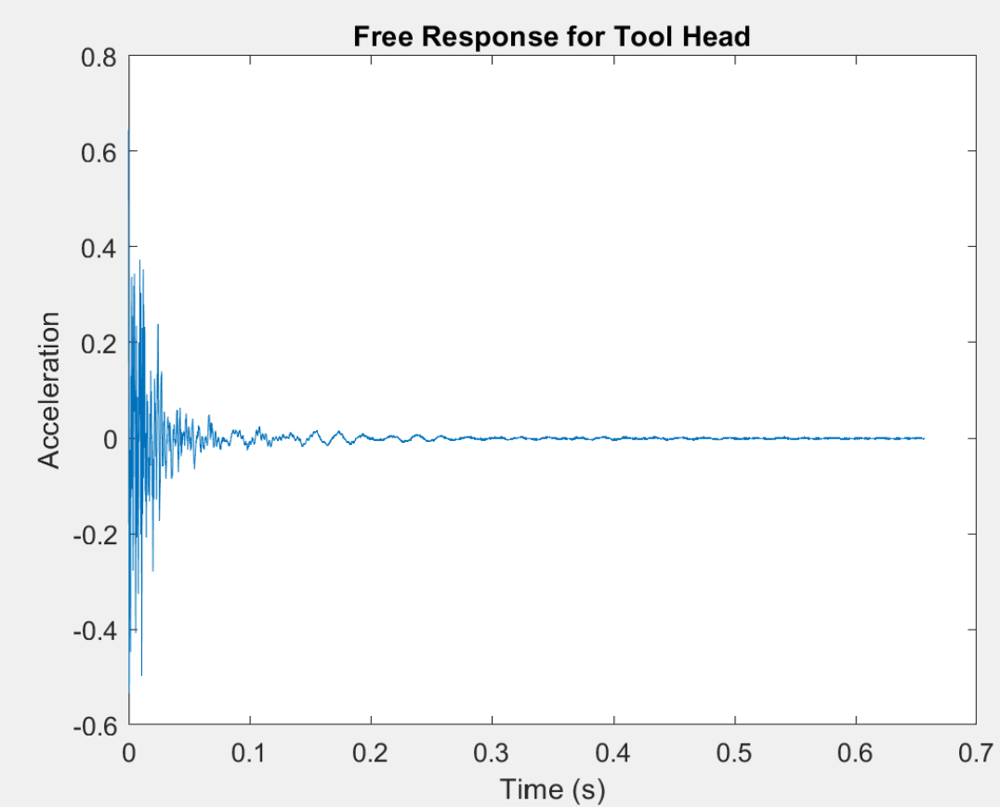
Free response — tool head acceleration decay
Vibration Analysis
Accelerometer Instrumentation
MATLAB System ID
Test Stand Design
Structural Dynamics
Designed, fabricated, and competed with a combat robot under strict weight and budget constraints.
Owned chassis structural design — truss topology selected for stiffness-to-weight,
3-D printed body in low-density, high-flexibility polymer to absorb impact.
Machined steel plow mechanisms from stock for the weapon system.
Iterated on geometry from CAD model through physical build to competition-ready hardware.
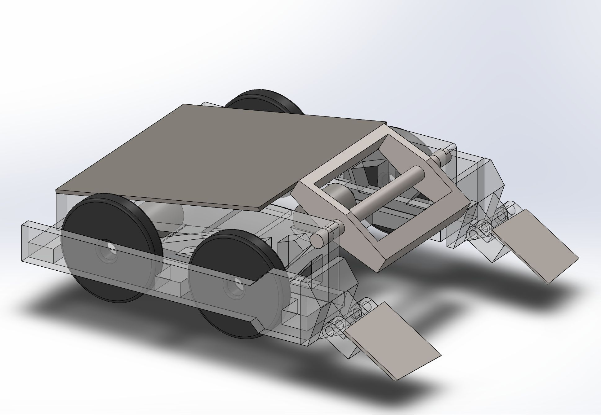
SolidWorks CAD — transparent chassis view
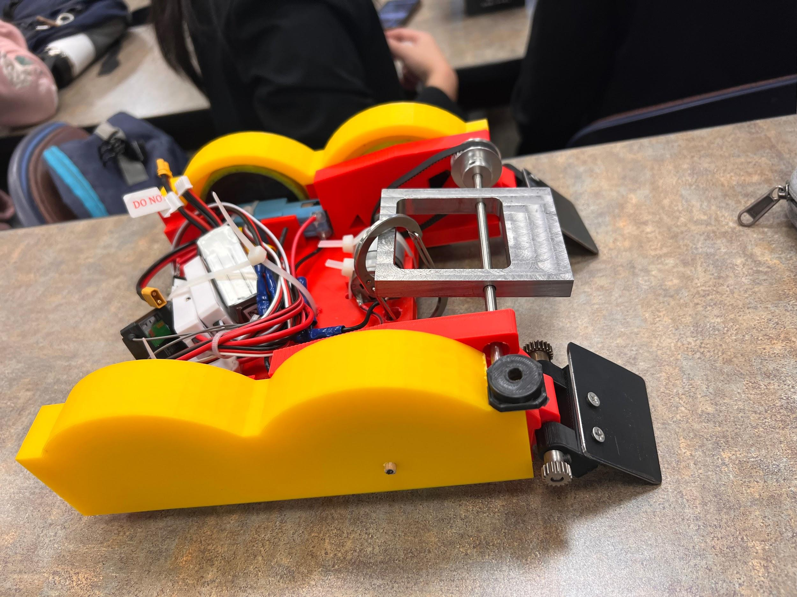
Completed build — machined steel plows, 3D-printed chassis
SolidWorks CAD
Structural Topology Design
Machining
Prototyping
Material Selection
Designed and built a surface EMG sensor from concept through functional hardware to detect
muscle voltage burst patterns during dynamic movement. Integrated analog
voltage detection circuitry and tested on human subjects during treadmill activity.
Processed signals in MATLAB via FFT and Median Frequency analysis
to track muscle fatigue in the frequency domain — targeting a real-time strain-risk wearable concept.
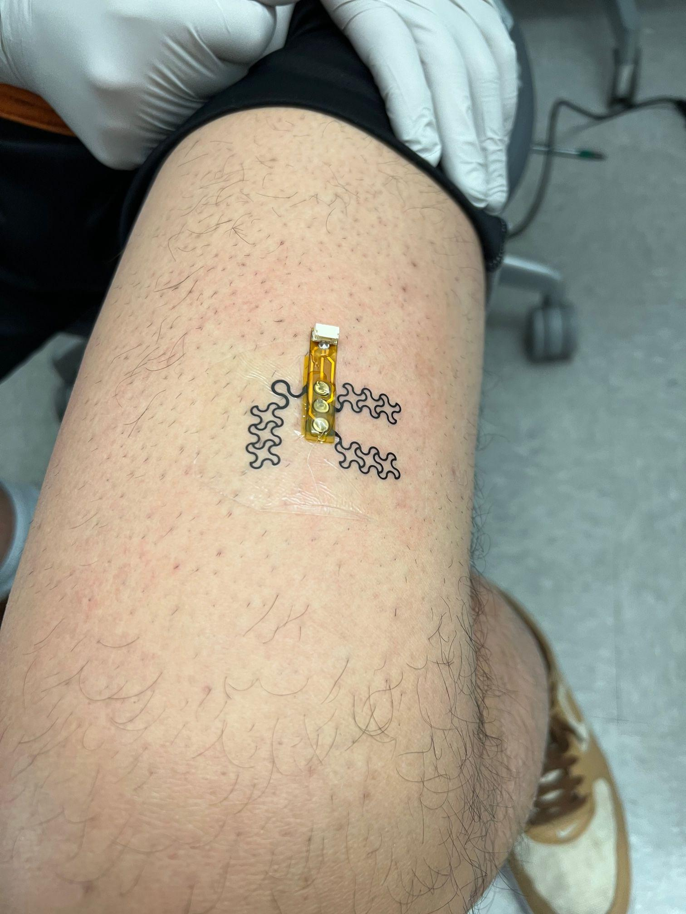
Sensor applied to forearm
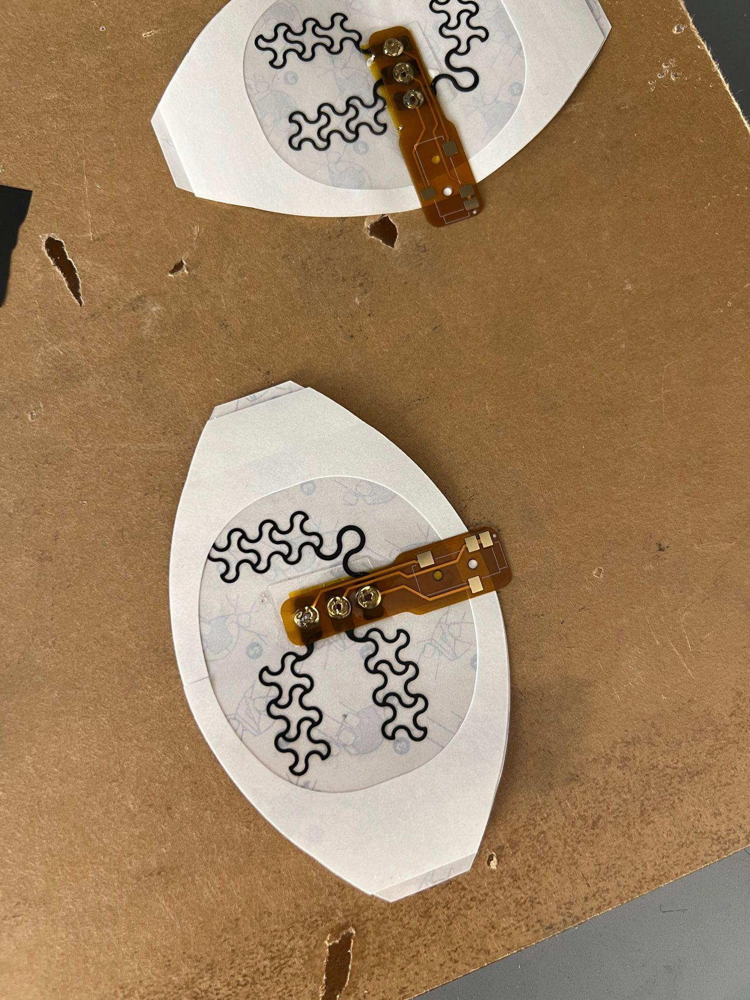
Sensor circuitry — component layout
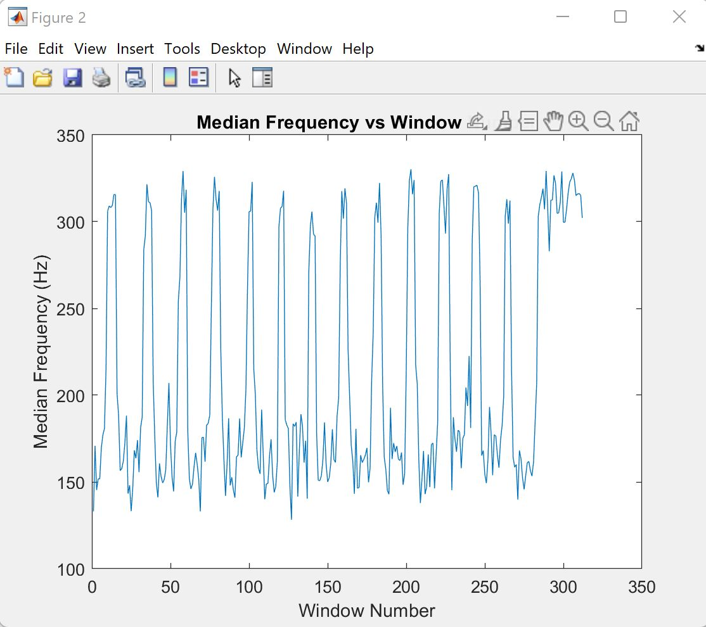
Median frequency vs. time window (fatigue marker)
Sensor Design
Circuit Integration
MATLAB FFT
Signal Processing
Prototype Fabrication
Built a Python forecasting model predicting hourly order volume and required courier
staffing for a rapid-delivery startup. Identified that overloaded couriers (high orders-per-courier)
paradoxically correlated with lower late rates — denser routes are more efficient —
informing a scheduling policy change. Model was adopted by store leadership for weekly shift scheduling
and reduced late delivery rate 30% after rollout.
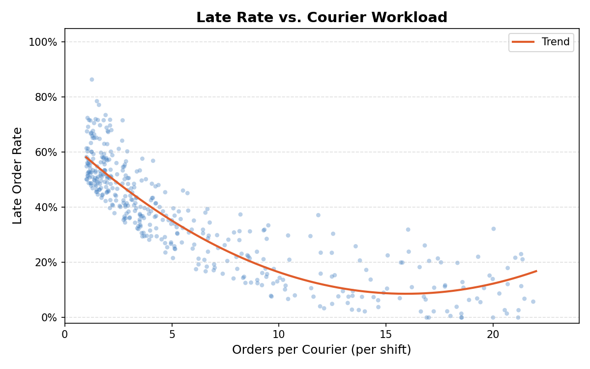
Late rate vs. courier workload — key insight driving policy change
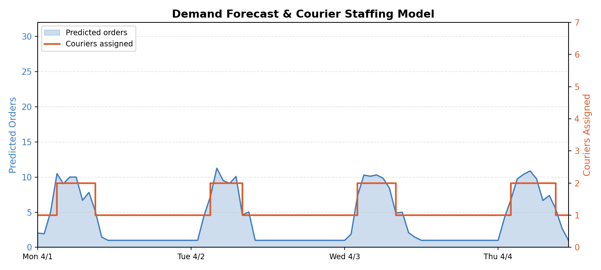
Demand forecast + automated courier assignment (one week)
Python
Pandas / NumPy
Predictive Modeling
Operations Optimization
Data Visualization
Designed and assembled a wheeled robot integrating a LIDAR sensor for environmental
mapping. 3-D printed chassis mounts electronics, motor controllers, and battery pack in a compact
frame. Demonstrates sensor integration, embedded systems wiring, and mechatronic system assembly.
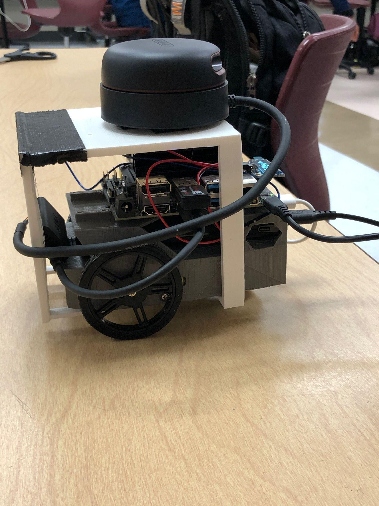
3D-printed chassis with LIDAR, Raspberry Pi, motor controllers
LIDAR Integration
3D Printing
Mechatronics
Embedded Systems
Designed and built a fully functioning tiny house from the ground up — framing, electrical, plumbing,
and finish work. Fabricated a custom wooden staircase and interior built-ins.
Demonstrates large-scope hands-on construction, systems integration (electrical + plumbing),
and design-to-build ownership.
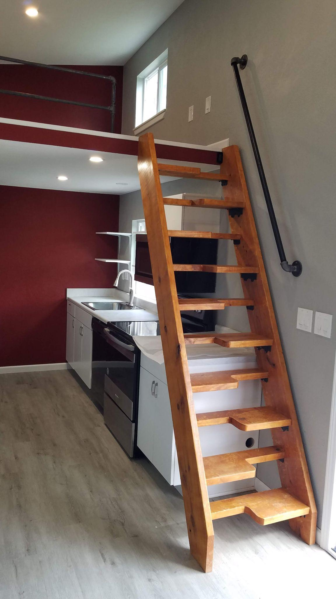
Finished interior — custom staircase and built-ins
Structural Design
Electrical Systems
Plumbing
Fabrication
Design-to-Build Ownership
Designed and built a freestanding outdoor performance stage — 1,280 sq ft of structural deck on
post-and-beam framing with perimeter railings and integrated backwall. Structural layout designed
for distributed live loads and lateral wind loads.
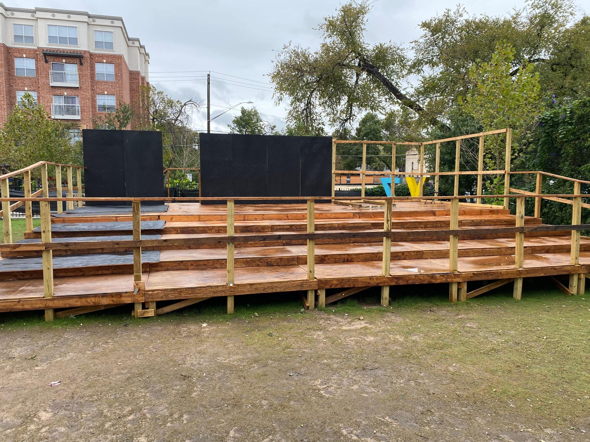
Completed stage — 32' × 40' post-and-beam structure
Structural Design
Load Analysis
Large-Scale Fabrication